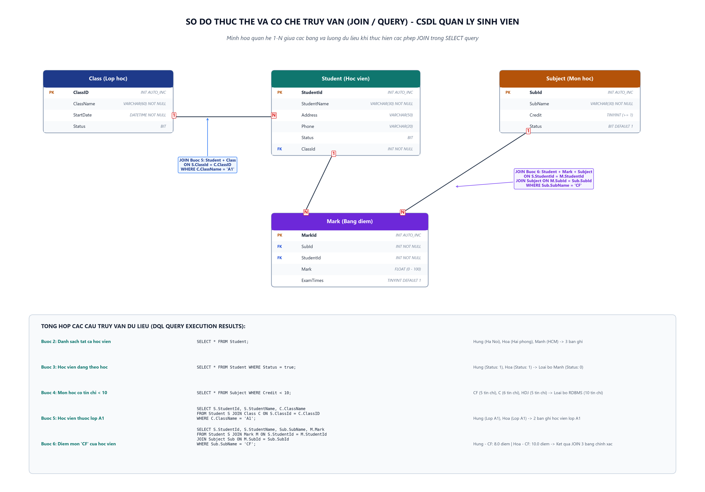

Luyện tập các kỹ thuật truy vấn dữ liệu (DQL): Sử dụng câu lệnh SELECT, lọc dữ liệu với mệnh đề WHERE (điều kiện logic và số học), kết nối 2 bảng và kết nối đa bảng (JOIN) trong MySQL.
SELECT * FROM Student;
WHERE Status = true;
WHERE Credit < 10;
JOIN Class ON ClassId = ClassID
JOIN Mark + Subject (CF)

USE QuanLySinhVien; SELECT * FROM Student;
| StudentId | StudentName | Address | Phone | Status | ClassId |
|---|---|---|---|---|---|
| 1 | Hung | Ha Noi | 0912113113 | 1 (Đang học) | 1 |
| 2 | Hoa | Hai phong | NULL | 1 (Đang học) | 1 |
| 3 | Manh | HCM | 0123123123 | 0 (Đã nghỉ) | 2 |
SELECT * FROM Student WHERE Status = true;
| StudentId | StudentName | Address | Phone | Status | ClassId |
|---|---|---|---|---|---|
| 1 | Hung | Ha Noi | 0912113113 | 1 (Đang học) | 1 |
| 2 | Hoa | Hai phong | NULL | 1 (Đang học) | 1 |
SELECT * FROM Subject WHERE Credit < 10;
| SubId | SubName | Credit | Status |
|---|---|---|---|
| 1 | CF | 5 | 1 (Hoạt động) |
| 2 | C | 6 | 1 (Hoạt động) |
| 3 | HDJ | 5 | 1 (Hoạt động) |
* Môn học RDBMS có Credit = 10 nên không thỏa mãn điều kiện nghiêm ngặt < 10.
SELECT S.StudentId, S.StudentName, C.ClassName FROM Student S JOIN Class C ON S.ClassId = C.ClassID WHERE C.ClassName = 'A1';
| StudentId | StudentName | ClassName |
|---|---|---|
| 1 | Hung | A1 |
| 2 | Hoa | A1 |
SELECT S.StudentId, S.StudentName, Sub.SubName, M.Mark FROM Student S JOIN Mark M ON S.StudentId = M.StudentId JOIN Subject Sub ON M.SubId = Sub.SubId WHERE Sub.SubName = 'CF';
| StudentId | StudentName | SubName | Mark |
|---|---|---|---|
| 1 | Hung | CF | 8.0 |
| 2 | Hoa | CF | 10.0 |
-- 1. KHOI TAO CSDL VA DU LIEU MAU CREATE DATABASE IF NOT EXISTS QuanLySinhVien; USE QuanLySinhVien; CREATE TABLE IF NOT EXISTS Class ( ClassID INT NOT NULL AUTO_INCREMENT PRIMARY KEY, ClassName VARCHAR(60) NOT NULL, StartDate DATETIME NOT NULL, Status BIT ); CREATE TABLE IF NOT EXISTS Student ( StudentId INT NOT NULL AUTO_INCREMENT PRIMARY KEY, StudentName VARCHAR(30) NOT NULL, Address VARCHAR(50), Phone VARCHAR(20), Status BIT, ClassId INT NOT NULL, CONSTRAINT FK_Student_Class FOREIGN KEY (ClassId) REFERENCES Class (ClassID) ); CREATE TABLE IF NOT EXISTS Subject ( SubId INT NOT NULL AUTO_INCREMENT PRIMARY KEY, SubName VARCHAR(30) NOT NULL, Credit TINYINT NOT NULL DEFAULT 1 CHECK (Credit >= 1), Status BIT DEFAULT 1 ); CREATE TABLE IF NOT EXISTS Mark ( MarkId INT NOT NULL AUTO_INCREMENT PRIMARY KEY, SubId INT NOT NULL, StudentId INT NOT NULL, Mark FLOAT DEFAULT 0 CHECK (Mark BETWEEN 0 AND 100), ExamTimes TINYINT DEFAULT 1, UNIQUE (SubId, StudentId), CONSTRAINT FK_Mark_Subject FOREIGN KEY (SubId) REFERENCES Subject (SubId), CONSTRAINT FK_Mark_Student FOREIGN KEY (StudentId) REFERENCES Student (StudentId) ); INSERT IGNORE INTO Class (ClassID, ClassName, StartDate, Status) VALUES (1, 'A1', '2008-12-20', 1), (2, 'A2', '2008-12-22', 1), (3, 'B3', CURRENT_DATE, 0); INSERT IGNORE INTO Student (StudentId, StudentName, Address, Phone, Status, ClassId) VALUES (1, 'Hung', 'Ha Noi', '0912113113', 1, 1), (2, 'Hoa', 'Hai phong', NULL, 1, 1), (3, 'Manh', 'HCM', '0123123123', 0, 2); INSERT IGNORE INTO Subject (SubId, SubName, Credit, Status) VALUES (1, 'CF', 5, 1), (2, 'C', 6, 1), (3, 'HDJ', 5, 1), (4, 'RDBMS', 10, 1); INSERT IGNORE INTO Mark (MarkId, SubId, StudentId, Mark, ExamTimes) VALUES (1, 1, 1, 8, 1), (2, 1, 2, 10, 2), (3, 2, 1, 12, 1); -- 2. CAC CAU TRUY VAN DU LIEU USE QuanLySinhVien; -- Buoc 2: Tat ca hoc vien SELECT * FROM Student; -- Buoc 3: Hoc vien dang theo hoc SELECT * FROM Student WHERE Status = true; -- Buoc 4: Mon hoc co tin chi < 10 SELECT * FROM Subject WHERE Credit < 10; -- Buoc 5: Hoc vien lop A1 SELECT S.StudentId, S.StudentName, C.ClassName FROM Student S JOIN Class C ON S.ClassId = C.ClassID WHERE C.ClassName = 'A1'; -- Buoc 6: Diem mon CF SELECT S.StudentId, S.StudentName, Sub.SubName, M.Mark FROM Student S JOIN Mark M ON S.StudentId = M.StudentId JOIN Subject Sub ON M.SubId = Sub.SubId WHERE Sub.SubName = 'CF';